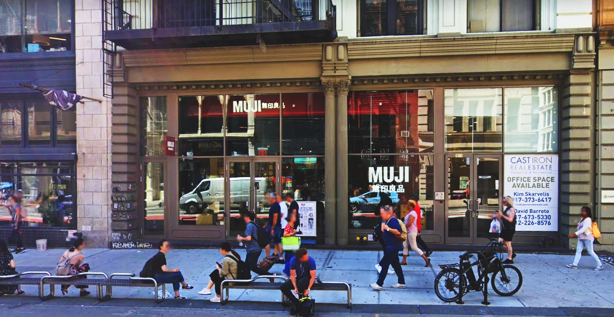
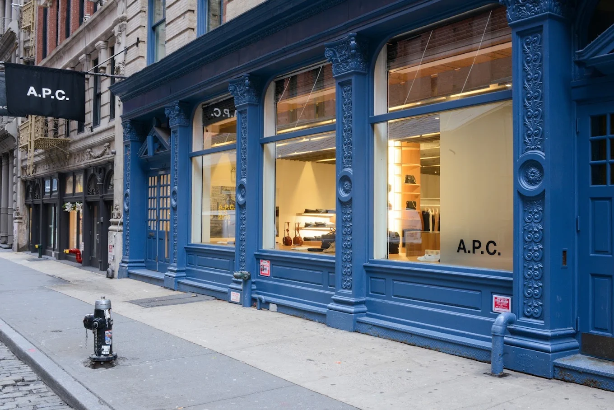
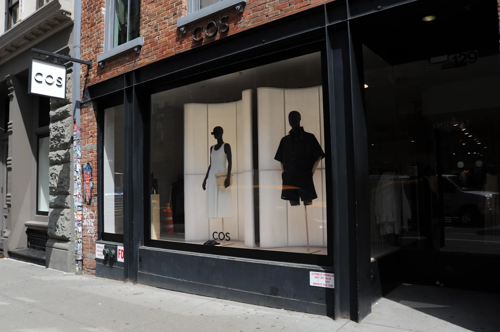
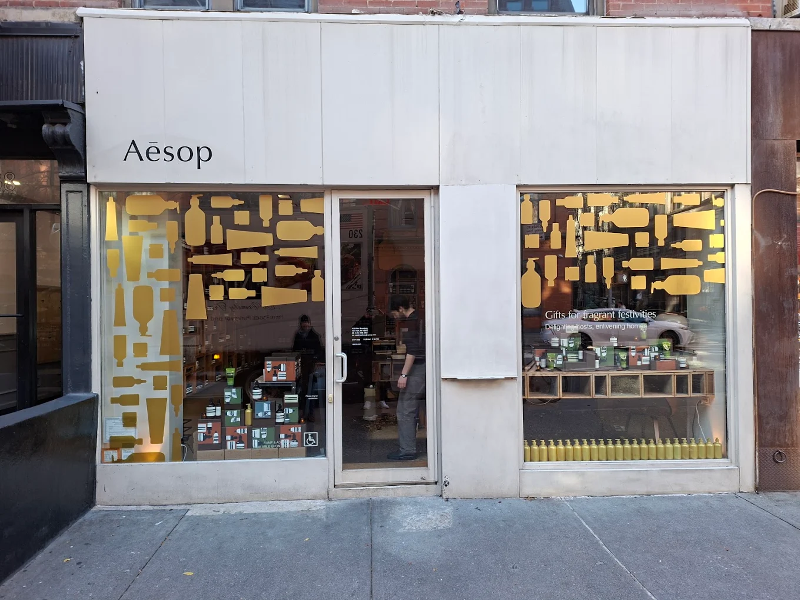
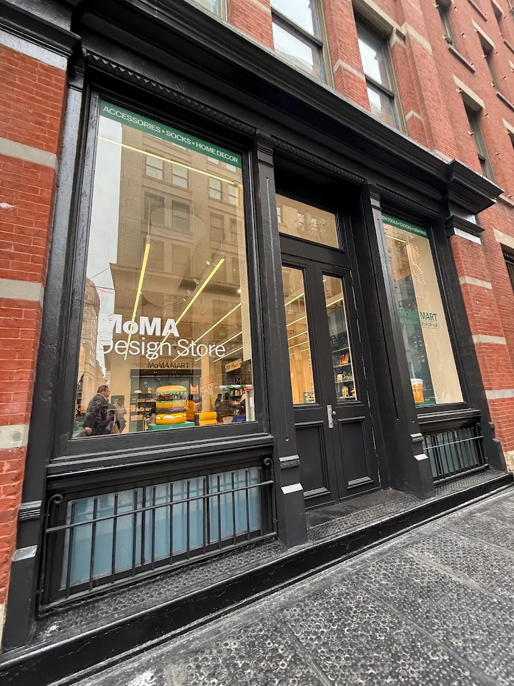

NEW YORK / SOHO WALK
I walked through Washington Square Park and past NYU on my way to SoHo. I felt happy and relaxed.
I walked through the park and enjoyed the beautiful view. Everyone seemed so chill
I walked past NYU and noticed buildings in different styles. There was always something beautiful to look at
I felt happy and relaxed as I walked into SoHo. I enjoyed looking at the buildings and taking my time.
PLACES ALONG THE WALK

A calm and simple store that matched the relaxed feelings of my walk.
A simple and quiet fashion store that fits the clean feeling of SoHo.

A minimal fashion store with a calm and modern feeling.

A quiet skincare store with a warm and carefully designed interior.

A design store filled with creative objects, books, and products that made the walk feel more inspiring.
WALK NOTES
Calm, slow, and curious.
SoHo streets and small shops.
No rush. I just walked and looked around.
OBSERVATIONS
Beautiful views in the park
Buildings in different styles
People looking relaxed